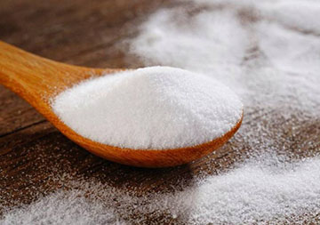
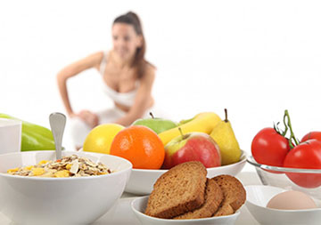
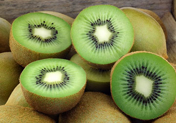

Блог
Диетические продукты против изнурительных диет
На страницах женских журналов, в интернете размещается бесчисленное количество новомодных диет. Одни обещают мгновенный результат, другие – избавление от ненавистных килограммов раз и навсегда, третьи - 100% похудение! Диеты подразумевают жесткие ограничения в пище, что, действительно, может привести к резкому сбросу веса. Однако такие результаты не могут происходить без ущерба для здоровья. Диетологи утверждают ...
Ученые рассказали, почему некоторым сложно отказаться от соли
Специалисты обнаружили, что у людей с высокой чувствительностью к соли и у тех, кто менее чувствителен к ней, отличается концентрация определенных белков в слюне. Вероятно, выводы исследователей помогут сделать продукты с низким содержанием натрия привлекательнее для людей, которым они не нравятся, сообщает The Hindustan Times...
Грибы - идеальный продукт для худеющих людей, доказал эксперимент
Они притупляют чувство голода на длительное время, передает РИА "Новости" со ссылкой на исследование Университета Миннесоты. По словам ученых, многие диеты схожи по калорийности, но сильно различаются по степени сытости. К примеру, орехи быстро дают насыщение, а вот продукты, богатые сахаром и жирами...
Правильно подобранный рацион - реальная защита от проблем с памятью
Диетолог Сату Ювякорпи, сотрудник Университета Хельсинки, подчеркивает: качество памяти напрямую зависит от рациона человека. Как отмечает РИА "Новости", в частности, дефицит витамина B, неумеренное употребление алкоголя и курение способствуют ухудшению памяти. Также небезопасно обилие быстрых углеводов и животных жиров...
Какие витамины содержит в себе киви ?
Киви содержит большое количество витаминов и полезных микроэлементов, его по праву называют королем витаминов. Зеленый плод является рекордсменом среди фруктов и овощей по качественному и количественному составу витаминов ...